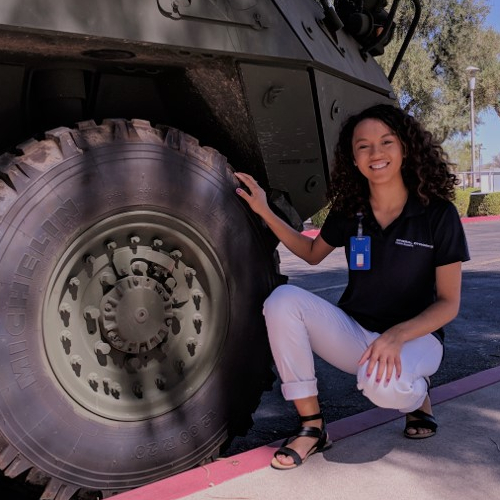
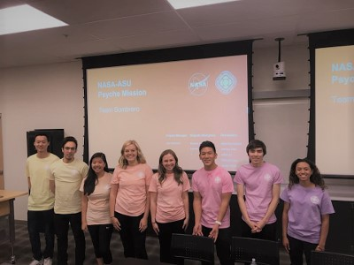
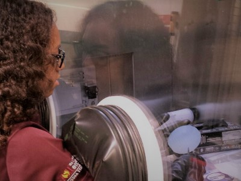

Infrastructure Business Analyst | General Dynamics Missions Systems
- May 2018 - Present
- Set/adjust a schedule for domain migrations that meets users’ requests and IT demands.
- Funnel infrastructure demand requests to the appropriate team.
- Generate new opportunities for employee engagement via recognition and social activities.
Data Center Intern | General Dynamics Missions Systems
- May 2017 - Aug 2017
- Organized thorough inventory of UPS infrastructure resulting in 200+ previously unknown devices being added to the asset database.
- Reviewed virtual and physical infrastructure in remote data centers and facilitated the reclamation of 25% of the available resources.
- Consolidated virtual and physical infrastructure at remote server room(s) to enterprise data centers.
- Reviewed existing event management processes and designed a more efficient workflow for incidents.
- Investigated IT outage incidents and facilitated the design of IT outage metrics.

Academic Projects
Psyche Mobile App Development | ASU Engineering Management Capstone
- Aug 2017 - Apr 2018
- Learn more about the ASU Psyche Capstone Projects.
- Led an interdisciplinary team of computer science and graphic design students to create an iOS app for NASA's Psyche Mission.
- Wrote and held the team accountable to: scope statement, work breakdown structure, and risk/monitor/control documents.
- Satisfied project deliverables: multimedia gallery, aggregation of Psyche social media, mission countdown clock, mission facts, mission timeline, and a wild card feature.
- Curated content for multimedia gallery, mission facts, and wild card feature.

Undergraduate Research | Quantum Energy and Sustainable Solar Technologies - ASU
- Fulton Undergraduate Research Initiative: Grant Funding: Aug 2015 - May 2016
- Increased solar cell efficiency by creating a monolayer of silicon nanoparticles.
- Calculated thickness and density of the silicon monolayer with ellipsometry and spectrophotometry.
- One of three speakers at the student research symposium luncheon. Shared my experience and lessons learned.
- Presented my research via poster at the AZ/NV Academy of Science annual meeting, April 2016.
- Barrett Honors Thesis: Aug 2016 - Apr 2017
- Designed optical coatings that have the maximum reflectance possible for normally incident light.
- Simulated designs in MacCleod software.
- Created optical coatings [nanoparticle layers] using the deposition tool.
- Analyzed samples using ellipsometry and spectophotometry.
